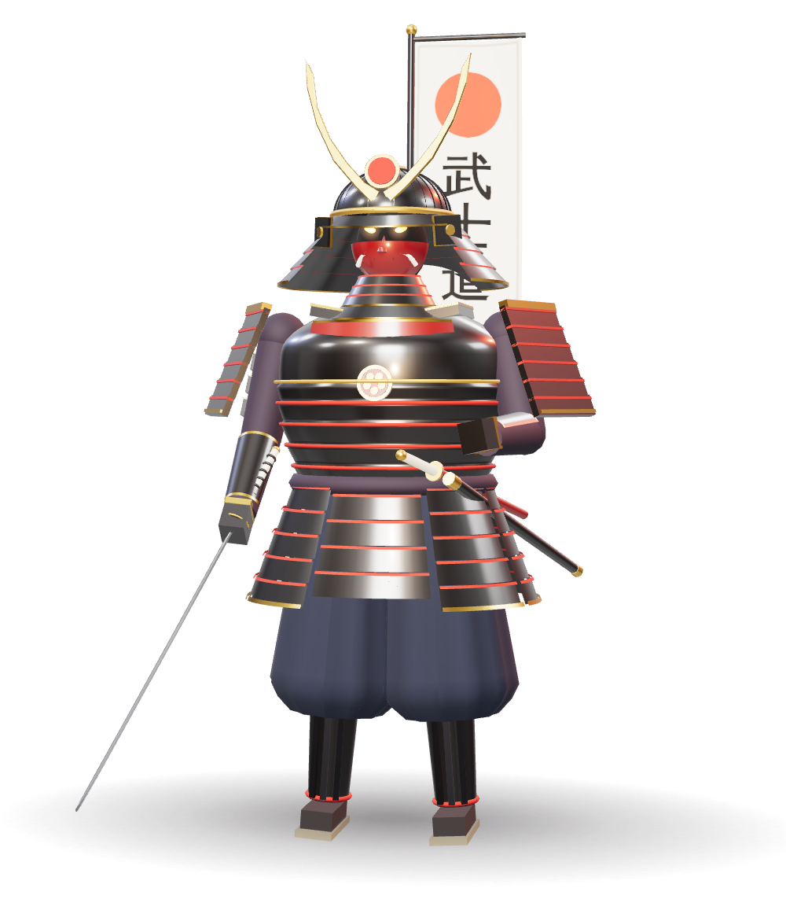
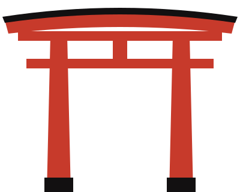

Ги
Справедливость
Верное решение без колебаний. Умение отличить правое от выгодного.

武士道 · Бусидо · путь воина
Тысяча лет японской истории в одной фигуре: доспех, меч и кодекс чести, который пережил своё сословие.
Слово «самурай» происходит от глагола сабурау — «служить». Прежде чем стать легендой, самурай был служилым человеком: воином при господине, для которого верность, дисциплина и готовность к смерти были не словами, а повседневной практикой.
01 / 07
Неписаный кодекс воина систематизировал Нитобэ Инадзо в книге «Бусидо: душа Японии» (1900). Наведите курсор на иероглиф.
Ги
Верное решение без колебаний. Умение отличить правое от выгодного.
Ю
Не безрассудство, а смелость делать то, что правильно, — даже когда страшно.
Дзин
Сила воина проверяется тем, как он обходится со слабым.
Рэй
Уважение в каждом жесте — к другу, к гостю и к противнику.
Макото
Слово самурая весомее договора: сказанное — значит сделанное.
Мэйё
Внутренний суд, от которого не скрыться. Позор страшнее смерти.
Тюги
Преданность господину и долгу — стержень, на котором держится весь кодекс.
02 / Доспех
Купол из склёпанных пластин с рёбрами-судзи. Ступенчатый назатыльник сикоро закрывает шею, а золотые рога кувагата делали воина узнаваемым на поле боя.
Лакированная полумаска защищала лицо и держала шлем на подбородочном шнуре. Усы и грозный оскал пугали врага, а ёдарэ-какэ прикрывала горло.
Пластины из железа и кожи под десятками слоёв лака уруси связаны шёлковым шнуром одоси. Лак спасал металл от влажного японского климата.
Широкие щиты висят на шнурах и двигаются вместе с руками — лучник мог стрелять, не снимая их. Снизу бёдра закрывает юбка из пластин кусадзури.
Изогнутый клинок носили за поясом лезвием вверх, чтобы выхватить и ударить одним движением. Рядом — короткий вакидзаси: пара дайсё была знаком сословия.
03 / Рождение клинка
Сталь выплавляют из железистого песка в глиняной печи татара. Трое суток огня и тонны древесного угля — ради нескольких килограммов лучшего металла.
Заготовку проковывают и складывают пополам снова и снова — до пятнадцати раз. Так выгоняют шлак и выравнивают углерод.
Твёрдая оболочка кавагане обнимает мягкое ядро синганэ: клинок режет как бритва и при этом не ломается от удара.
Клинок обмазывают глиной — тонко у лезвия, толсто у обуха. В воде лезвие твердеет, на стали проступает линия хамон, а меч получает изгиб сори.
Мастер-тогиси неделями полирует клинок камнями всё мельче и мельче, пока в стали не проявится её узор — хада.
04 / Хронология
Столица переезжает в Киото. В провинциях растёт сословие вооружённых слуг — будущих самураев.
Минамото побеждают в войне Гэмпэй. В 1192 году Ёритомо становится сёгуном — власть переходит к воинам.
Самураи дважды отражают флот Хубилая, а тайфун камикадзе довершает разгром.
Смута Онин открывает век воюющих провинций: замки, аркебузы и великие полководцы.
Токугава Иэясу — сёгун. Два с половиной века мира: самураи становятся чиновниками, поэтами и учёными.
После реставрации императорской власти сословие упразднено, а ношение мечей запрещено указом.
Последнее восстание самураев во главе с Сайго Такамори. Эпоха меча уходит — легенда остаётся.

Путь самурая обретается в смерти.
Не призыв умереть, а призыв жить так, будто терять уже нечего: без страха и без сожалений.